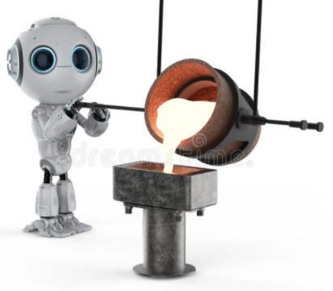

Principios del proceso de fundición.
Utilizada por primera vez hace alrededor de seis mil años, la fundición continúa siendo un importante proceso de manufactura para producir partes muy pequeñas (o muy grandes). El proceso de fundición consta de estos pasos básicos:
a) se vacía metal fundido en un molde con la forma de la parte a manufacturar,
b) se deja solidificar, y
c) se retira la parte del molde.
Una de las principales formas de clasificar a los procesos de fundición, es por las características de los moldes:
a) Molde Desechable
b) Molde Permanente
c) Molde Mixto
Metales se llaman a aquellos materiales que son buenos conductores del calor y la electricidad, poseen alta densidad, tienen una elevada capacidad de reflexión de la luz, y son sólidos en temperaturas normales (excepto el mercurio). Se extraen de los minerales de las rocas.
Recipiente o pieza hueca donde se echa una masa blanda o líquida que, al solidificarse, toma la forma del recipiente.
Metales se llaman a aquellos materiales que son buenos conductores del calor y la electricidad, poseen alta densidad, tienen una elevada capacidad de reflexión de la luz, y son sólidos en temperaturas normales (excepto el mercurio). Se extraen de los minerales de las rocas.